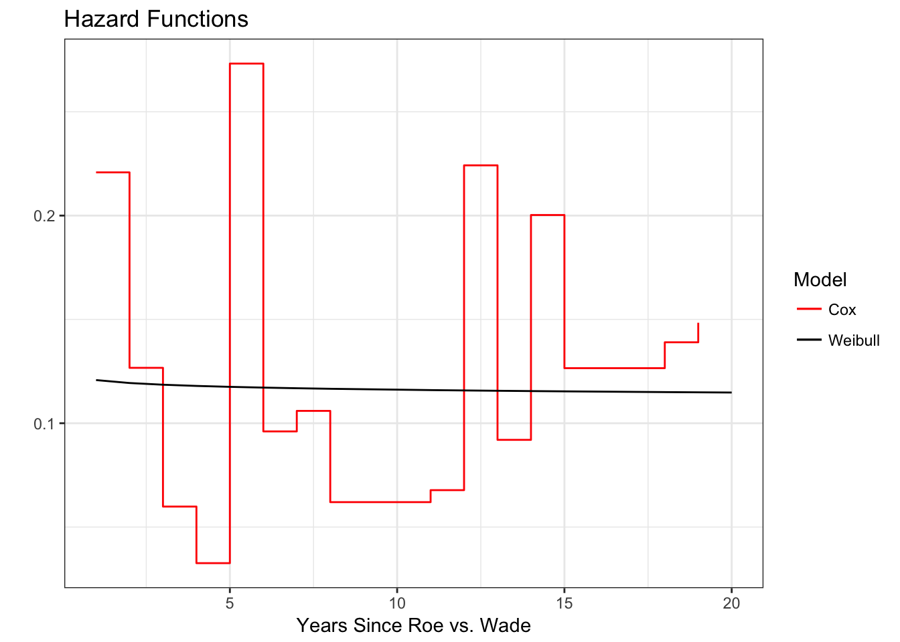
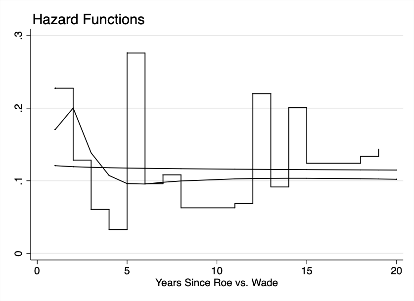

6 Issues in Model Selection
This chapter makes use of data on the duration until state adoption of restrictive abortion legislation since the 1973 Roe vs. Wade Supreme Court decision (from Brace et al. 1999).
6.1 Restrictive Abortion Legislation Data in R
Let’s load the dataset.
#-------Dataset
adopt <- read.dta("~/Dropbox/github/liwu-gan.github.io/dta/adopt_singleevent.dta")
#-------Data prepation
# Create survival object for dv
dv <- Surv(adopt$'_t', adopt$'_d')6.1.1 Table 6.1
First, we run each of the models.
# The conditional logit model is the same as the exact discrete method we used earlier
ed_mod <- coxph(dv ~ mooneymean, data = adopt, ties = "exact")
### Can't run Royston-Parmar model
# Weibull P/H/
weib_mod <- survreg(dv ~ mooneymean, data = adopt, dist = "weibull")Again, we have to convert the Weibull A.F.T. to a P.H. parameterization.
# Conversion from Weibull A.F.T. to P.H.
intercept <- rep(1, 50)
adopt$intercept <- intercept
weib_mod1 <- survreg(dv ~ 0 + mooneymean + intercept, data = adopt)
weib_mod2 <- survreg(dv ~ 0 + intercept + mooneymean, data = adopt)
weib_mod1_ph <- ConvertWeibull(weib_mod1)
weib_mod2_ph <- ConvertWeibull(weib_mod2)
weib_ph <- rbind(weib_mod1_ph$vars, weib_mod2_ph$vars)
# Delete rows that are redundant/unnecessary
weib_ph <- weib_ph[-c(1,2,4),]
weib_ph <- weib_ph[c("mooneymean", "gamma", "intercept"),]
weib_ph## Estimate SE
## mooneymean -0.2227881 0.08239561
## gamma 0.9830112 0.12000313
## intercept -2.0966280 0.31945773Let’s format these models into a presentable table.
| Cox Model | Weibull Model | ||
|---|---|---|---|
| Pre-Roe | -0.22 (0.09) | -0.22 (0.08) | |
| Constant | -2.10 (0.32) | ||
| Log Likelihood | -96.60 | -133.07 | |
| N | 50 | 50 | |
| Shape Parameter | 0.98 | ||
6.1.2 Figure 6.1
We first calculate the baseline hazard for the Weibull.
# Let's create lambda from the Weibull model we ran earlier
lambda_base <- unname(exp(-(weib_mod$coef[1])))
p <- 1/weib_mod$scale
t <- adopt$'_t'
# We cangenerate the baseline hazard function, knowing that
# h(t) = lambda * p * (lambda * t)^(p-1)
haz_baseweib <- lambda_base * p * (lambda_base * t)^(p-1)
weib <- data.frame(cbind(t, haz_baseweib))We do the same for the Cox model we already ran earlier.
# Calculates integrated baseline hazard, H(t)
haz_rte <- basehaz(ed_mod, centered = FALSE)
# To get the baseline hazard, we calculate H(t) - H(t-1), which gives us the corresponding # value for all obs. except for the first.
haz_cox <- data.frame(diff(haz_rte$hazard))
# Take out H(t) at t = 1 and merge with previous calculations
row <- data.frame(0.2208064)
colnames(row) <- "diff.haz_rte.hazard."
haz_cox <- rbind(row, haz_cox)
colnames(haz_cox) <- "baseline_hazard"
# Merge baseline hazards into master dataframe with integrated hazards
haz_rte$haz_cox <- haz_cox
#Drop last row for graphical purposes
haz_rte <- haz_rte[-c(16), ]
### Calculate baseline hazard rate for Royston-Parmar modelWe are ready to plot now.
ggplot(data = haz_rte, aes(x = time, y = haz_cox, color = "black")) + geom_step() +
geom_line(data = weib, aes(x = t, y = haz_baseweib, color = "red")) +
theme_bw() +
ggtitle("Hazard Functions") +
xlab("Years Since Roe vs. Wade") +
ylab("") +
labs(colour = "Model") +
scale_color_manual(labels = c("Cox", "Weibull"), values = c("red", "black"))
6.2 Restrictive Abortion Legislation Data in Stata
Let’s load the dataset.
/* Dataset is adopt_singleevent.dta */
use "~/Dropbox/github/liwu-gan.github.io/dta/adopt_singleevent.dta"6.2.1 Table 6.1
We begin by estimating the Cox and Weibull models, and storing the results to make a table.
* Cox model
eststo clear
eststo: stcox mooneymean, exactp nohr basehc(haz_cox)
* Weibull model
eststo: streg mooneymean, dist(weib) nohr
* Reset working directory to collect output
cd ~/Dropbox/github/liwu-gan.github.io/chapter6
* Generate regression table output for Cox and Weibull
esttab using ch6_cox_weib.html, replace ///
coeflabel(mooneymean "Pre-Roe" _cons "Constant") ///
title(Models of Adoption of Restrictive Abortion Legislation) ///
mtitles("Cox Model" "Weibull Model") ///
eqlabels("", none) ///
b(2) se(2) nostar ///
stats(ll N, label("Log-Likelihood" "<em>N</em>") fmt(2 0)) Let’s estimate the Royston-Parmar model in comparison, and display the results in a table.
eststo clear
eststo:stpm mooneymean, scale(h) df(3)
* Generate regression table output for Royston-Parmar model
esttab using ch6_rp.html, replace ///
coeflabel(s0:_cons "Spline 1" s1:_cons "Spline 2" s2:_cons "Spline 3" xb:mooneymean "Pre-Roe" ///
xb:_cons "Constant") ///
title(Models of Adoption of Restrictive Abortion Legislation) ///
mtitles("Royston-Parmar Model") ///
eqlabels("", none) ///
b(2) se(2) nostar ///
stats(ll N, label("Log-Likelihood" "<em>N</em>") fmt(2 0)) 6.2.2 Figure 6.1
We already computed the baseline hazard for the Cox model earlier in the regression equation, so now we compute the baseline hazards for the Royston-Parmar and Weibull models.
* Compute baseline hazard for Royston-Parmar model
predict haz_rp, haz zero
* Compute baseline hazard for Weibull based on P.H. parameterization.
streg mooneymean, dist(weib) time
* First, note that lambda=exp(-beta'x). We can compute lambda for each confict type.
gen lambda_base=exp(-(_b[_cons])) if e(sample)
* Second, note that h(t)=lambda*p*(lambda*t)^(p-1). We can generate the hazard rate for the baseline.
gen haz_weib=lambda_base*e(aux_p)*(lambda_base*yrtoadp)^(e(aux_p)-1)
twoway (line haz_rp yrtoadp, sort lpattern(solid)) (line haz_weib yrtoadp, sort lpattern(solid)) ///
(line haz_cox yrtoadp, sort connect(stairstep) lpattern(solid)), ///
legend(off) ///
xtitle("Years Since Roe vs. Wade") ///
title("Hazard Functions", position(11)) ///
scheme(s2mono) graphregion(color(white) icolor(none)) ///
saving(hazadopt.gph, replace)
graph export ch6_hazadopt.png, replace{